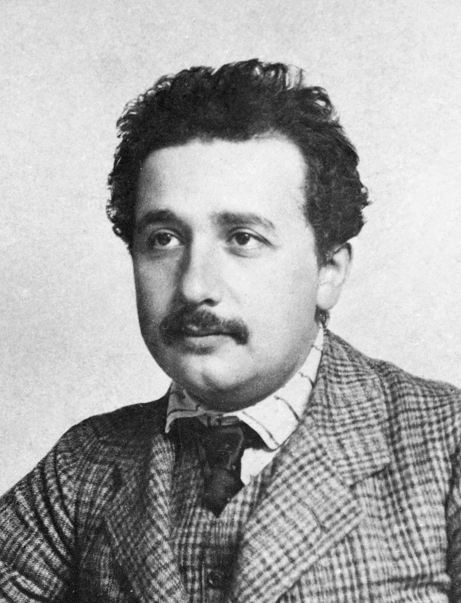
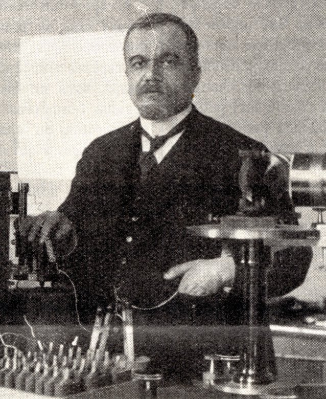
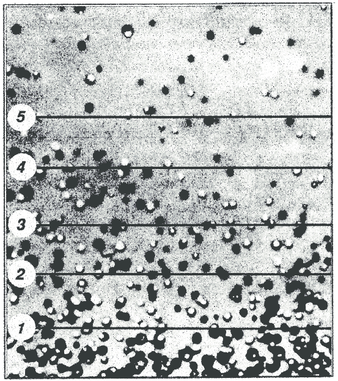
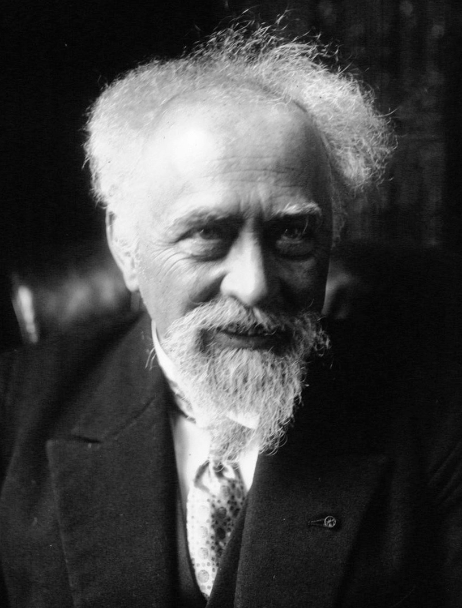
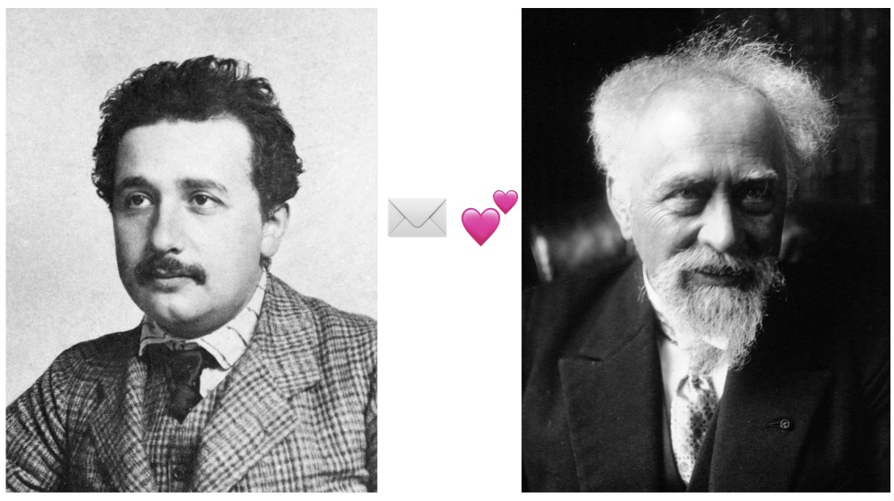

### 原子はどのように「発見」されたのか？ #### ～不規則なブラウン運動が示した原子の実在性～ <img src="assets/images/title.png" height="400px"> --- ### 自己紹介 <div class="profile-container"> <div class="profile-left"> * さめ(мег-сск) * ⚛️ VRChat物理学集会の主催 * 🧑🎓 社会人学生として通信制大学在学中 * 得意分野: * 📸 コンピュータビジョン (画像認識/点群処理) * 🌍 空間情報処理 (地理情報/リモートセンシング) * ☁️ クラウドインフラ設計/IaC (AWS, GCP) * [GitHub](https://github.com/s-sasaki-earthsea-wizard) * [YouTube](https://www.youtube.com/@SyotaSasaki-EW) * [Speaker Deck](https://speakerdeck.com/syotasasaki593876) </div> <div class="profile-right"> <img src="assets/images/icon_circle.png" alt="avatar" height="350px" width="350px"> </div> </div> --- ### 今日話すこと <div class="simple-box"> * **ブラウン運動**とは何か * **アインシュタイン**の理論的貢献 * **ペランの実験**による検証 * **「見えない原子」がどのようにして「実在する」と認められたのか** </div> <img src="assets/images/Csm_Brownian-Motion_f99de6516a.png" alt="brown motion" height="300px"> --- ## 歴史的背景 ## 〜原子は仮説に過ぎなかった〜 --- ### 19世紀末の科学界： #### 原子論 vs エネルギー論 <div class="simple-box"> * **原子論派**（ボルツマンら） * 物質は目に見えない小さな粒子（原子・分子）からできている * 熱は分子の運動である * **エネルギー論派**（マッハ、オストヴァルトら） * 原子は計算上の便宜的な概念に過ぎない * 直接観測できないものを「実在」とは認められない </div> --- ### 「原子は実在するのか？」 <div class="highlight-box"> * 当時、原子の存在は**仮説**に過ぎなかった * むしろ懐疑的な見方の方が主流だった * 誰も原子を直接「見た」ことがなかった * 驚くほど実際の物理現象を説明できても直接観測できないものを「実在」とは認められない </div> <div class="container"> <div class="col-left"> > 「私は原子を信じない。人工的な便宜手段に過ぎない」 > — エルンスト・マッハ </div> <div class="col-right"> <img src="assets/images/Mach.jpg" alt="Mach" height="400px"> </div> </div> --- ### アインシュタインの問題意識 <div class="simple-box"> * 学生時代からボルツマンの『気体論』に傾倒 * マッハの『熱学』も読み、原子論論争を認識 </div> <div class="container"> <div class="col-left"> > 「分子の実在を何とかして証明したい！」 </div> <div class="col-right">  </div> </div> --- ### 1905年：奇跡の年 <div class="simple-box"> アインシュタインは1905年に5つの論文を発表 * 光量子仮説（光電効果の説明） * **ブラウン運動の理論** ← 今日の話 * 特殊相対論 * 質量とエネルギーの等価性: $E = mc^2$ * 博士論文（分子の大きさ） </div> <br> <div class="highlight-box"> → 26歳のアインシュタインは物理学を根本から変える大発見を立て続けに構築した！ </div> --- ## ブラウン運動の発見 ## 〜不規則に動く花粉の微粒子〜 --- ### ロバート・ブラウン（1827年） <div class="simple-box"> * イギリスの植物学者 * 花粉を水に浮かべて顕微鏡で観察 * 花粉から出た微粒子が**不規則に動き続ける**ことを発見 </div> <br> <div class="highlight-box"> この不思議な運動の原因は何なのか？ 約80年にわたり、様々な仮説が提案され、検証された </div> --- ### 仮説①：🪴生命力？ <div class="simple-box"> * ブラウンは最初、花粉の微粒子が「生きている」のではないかと考えた * 花粉は植物の生殖細胞であり、生命力を持っているのかもしれない </div> <br> <div class="highlight-box"> **検証結果：** * **死後1世紀以上経った花粉**（標本室の古い花粉）でも同じだった！ → 生命力では説明できない </div> --- ### 仮説②：🌿有機物だから？ <div class="simple-box"> * 花粉は有機物だから特別な性質を持つのでは？ </div> <br> <div class="highlight-box"> **検証結果：** * **石炭、岩石、金属**の微粒子でも同じ運動が観察された * スフィンクスの一部を削り取って実験しても同じだった（ブラウン自身が実験） → 有機物に特有の現象ではない </div> --- ### 仮説③：💧液体の対流？ <div class="simple-box"> * 温度差による液体の対流が粒子を動かしているのでは？ * 顕微鏡の光が液体を温めて対流を起こしているのでは？ </div> <br> <div class="highlight-box"> **検証結果：** * 対流なら**粒子は同じ方向に流れる**はず * 実際は粒子ごとに**バラバラな方向**に動いている → 対流では説明できない </div> --- ### 仮説④：⚡️電気的な力？ <div class="simple-box"> * 微粒子が帯電していて、電気的な力で動いているのでは？ </div> <br> <div class="highlight-box"> **検証結果：** * 水中に電極を入れて電場をかけても、粒子は電極に**引き寄せられない** * 運動の方向は電場と無関係 → 電気的な力では説明できない </div> --- ### 仮説⑤：🧪化学反応？ <div class="simple-box"> * 樟脳船のように粒子表面の化学反応で何かが溶けて、その反作用で動いているのでは？ </div> <br> <div class="highlight-box"> **検証結果：** * ある研究者は**2年間ずっと観察を続けた** * 運動は衰えることなく続いた！ * 化学反応ならいずれ反応物が尽きて止まるはず → 化学反応では説明できない </div> --- ### ブラウン運動の特徴 <div class="simple-box"> あらゆる仮説が否定された後に残った事実： * 微粒子（約1$\mu \text{m}$程度）が不規則にジグザグと動く * 運動は**いつまでも止まらない** * 温度が高いほど激しく動く * 粒子が小さいほど激しく動く </div> <br> → 原因不明のまま、80年近くが過ぎた... --- ### グーイの洞察（1888年） <div class="highlight-box"> **「ブラウン運動は熱力学第二法則で説明できない」** * ブラウン運動は外部からエネルギーを供給せずにいつまでも続く * 見えない分子の衝突が原因かもしれない </div> <div class="container"> <div class="col-left"> > ブラウン運動ってカルノーの原理と矛盾するよね？ </div> <div class="col-right">  </div> </div> --- ## マクロの拡散とミクロの粘性をつなぐ ## 〜アインシュタインの洞察〜 --- ### アインシュタインの発想の転換 <div class="simple-box"> **🌀 従来のアプローチ：** * 個々の粒子の軌跡を追跡しようとする * 瞬間瞬間の運動を観察 * 規則性がなく理論的に捉えられない！ </div> <br> <div class="highlight-box"> **💡アインシュタインのアプローチ：** * 多数の粒子の**統計的振る舞い**に注目 * 個別の粒子の軌跡ではなく、粒子の集団的な**変位の統計量**を考える </div> --- ### ブラウン運動の統計 <div class="simple-box"> * ブラウン粒子の移動方向、速度はめまぐるしく変化する * 瞬間速度の測定は事実上不可能 * しかし「一定時間後にどれだけ動いたか」は測定できる！ * 1回コインを投げた時の裏表は予測不可能 * 100万回投げた時の裏表の数は一定範囲で予測可能 </div> <br> <div class="highlight-box"> * 問題を**統計力学**の枠組みで捉え直した！ </div> --- ### フィックの法則 <div class="simple-box"> 微粒子は濃度の高い方から低い方へ拡散する $$\text{粒子の流れ} = -D \frac{d\rho}{dx}$$ （$D$：拡散係数、$\rho$：粒子数密度） </div> <br> <div class="highlight-box"> * 鉄板をバーナーで熱するとバーナー付近が最も熱くなり、離れるほど温度が下がる (**熱伝導！**) * 粒子の集団的な振る舞いを捉える </div> --- ### ストークスの法則 <div class="simple-box"> **ストークスの法則：** 粘性流体中を動く球には抵抗力がはたらく $$\text{抵抗力} = -6\pi \eta r v$$ （$r$：粒子半径、$\eta$：粘性係数、$v$：速度） </div> <br> <div class="highlight-box"> * 個別の粒子の振る舞いを捉える </div> --- ### 拡散と粘性を結びつける <div class="simple-box"> * 微粒子たちに外力 $F$ が働いているとする * 外力と粘性抵抗が釣り合う (水を落下するボールは速度一定になる) * さらに粘性抵抗と拡散による移動が釣り合うとき </div> <br> <div class="highlight-box"> $$ \text{外力による流れ} = \text{拡散による流れ} $$ $$ \dfrac{\rho F}{6 \pi \eta r} = D \dfrac{\partial \rho}{\partial x} $$ </div> --- ### 沈降平衡 <div class="simple-box"> * 粒子密度は高さによって指数的に減少する * 気圧の高度分布から知られていた * 拡散と粘性の釣り合いが取れた状態と考えた </div>  <div class="caption">Credit: Colloidal Aggregation Coupled with Sedimentation: A Comprehensive Overview, DOI:10.5772/65699</div> --- ### 沈降平衡の分布 <div class="simple-box"> $$ \rho = \rho_0 \exp\left(-\frac{mgx}{k_B T}\right) = \rho_0 \exp\left(-\frac{U(x)}{k_B T}\right)$$ ($k_B$：ボルツマン定数、$T$：温度、$U(x)$：ポテンシャルエネルギー) </div> --- ### 沈降平衡と外力 <div class="simple-box"> 外力$F = -\dfrac{dU(x)}{dx}$なので $$ \dfrac{\partial \rho}{\partial x} = -\dfrac{\rho}{k_B T} \dfrac{dU(x)}{dx} = \dfrac{\rho F}{k_B T} $$ $$ \Rightarrow \rho F = k_B T \dfrac{\partial \rho}{\partial x} $$ </div> --- ### 外力を粘性抵抗と拡散の式に代入 <div class="simple-box"> * 外力: $$ \rho F = k_B T \dfrac{\partial \rho}{\partial x} $$ * 粘性抵抗と拡散の釣り合い: $$ \dfrac{\rho F}{6 \pi \eta r} = D \dfrac{\partial \rho}{\partial x} $$ </div> --- ### アインシュタイン-ストークス式 <div class="simple-box"> $$ D = \frac{k_B T}{6\pi \eta r} $$ </div> <br> <div class="highlight-box"> * $D$: マクロの世界の拡散 * $\eta$: ミクロの世界の粘性抵抗 * $k_B T$: 熱エネルギー → 拡散(マクロ)と粘性(ミクロ)が熱によって結びついた！ </div> --- ## 拡散と変位の二乗平均 --- ### 拡散方程式 <div class="simple-box"> * 物質の拡散を表す方程式 * 例: 水にインクをこぼしたときに、インクが広がっていく様子 $$ \dfrac{\partial \rho}{\partial t} = D \dfrac{\partial^2 \rho}{\partial x^2} $$ </div> <br> <div class="highlight-box"> * アインシュタイン-ストークスの式で拡散と粘性と熱が結びついた * 🤔さらに拡散方程式と結びつけると何がわかるだろう？ </div> --- ### 拡散方程式の解 <div class="highlight-box"> * 拡散方程式の解はガウス分布 * 境界条件は$\rho(x,0)=\delta(x)$ $$ \rho(x,t) = \frac{1}{\sqrt{4\pi Dt}} \exp\left(-\frac{x^2}{4Dt}\right) $$ </div> <img src="assets/images/Gaussian_distribution_thick_lines.svg" alt="Gaussian distribution" height="270px"> --- ### アインシュタインの革新的解釈 <div class="simple-box"> **従来のフィックの法則：** * $\rho(x,t)$ = **多数の粒子の濃度分布** * 「粒子の集団がどう広がるか」を記述 </div> <br> <div class="highlight-box"> **💡 アインシュタインの再解釈：** * $\rho(x,t)$ = **1つの粒子がある位置にいる確率** * 「1つの粒子がどこにいそうか」を記述 → 拡散方程式を**確率密度関数の時間発展**として解釈した！ </div> --- ### 確率密度関数と期待値 <div class="simple-box"> 確率密度関数$\rho(x,t)$の期待値は変数と確率密度関数の積の積分で得られる (純粋に数学的な定義、物理的な解釈は一切なし) $$ \langle x \rangle = \int_{-\infty}^{\infty} x \rho(x,t) dx $$ $ \langle x \rangle$: 期待値 </div> --- ### 拡散の変位の期待値 <div class="simple-box"> 確率密度関数$\rho(x,t)$がガウス分布の時、変位の期待値$\langle \Delta x \rangle$は0となる (ガウス積分で導出可能) $$ \rho(x,t) = \frac{1}{\sqrt{4\pi Dt}} \exp\left(-\frac{x^2}{4Dt}\right) $$ $$ \Rightarrow \langle \Delta x \rangle = \int_{-\infty}^{\infty} x \rho(x,t) dx = 0$$ </div> --- ### 変位の期待値から何がわかるか？ <div class="simple-box"> * 変位の期待値$\langle \Delta x \rangle = 0$なので、粒子は平均的には移動しない * 右に行ったり左に行ったりするので平均を取るとプラスマイナスでキャンセルしあって0になる </div> <br> <div class="highlight-box"> * 変位の平均を取るとうまくいかない * でも二乗平均なら？ * プラスマイナスでキャンセルし合わない * 統計でもよくある考え方、分散は平均からのズレの二乗をとって計算される </div> --- ### 変位の二乗平均 <div class="simple-box"> 変位の二乗平均$\langle (\Delta x)^2 \rangle$は $$ \langle (\Delta x)^2 \rangle = \int_{-\infty}^{\infty} x^2 \rho(x,t) dx = 2Dt$$ </div> <br> <div class="highlight-box"> * **二乗平均は時間に比例する！** * 数学的な期待値計算が物理的な意味を持つ拡散係数、時間とつながる！ </div> --- ### 核心：変位の2乗平均の法則 <div class="highlight-box"> $$\langle (\Delta x)^2 \rangle = 2Dt$$ **変位の2乗平均は時間に比例する** </div> <br> <div class="simple-box"> * 時間 $t$ が経つほど粒子は平均的に遠くへ移動する * でも距離そのものの平均はキャンセルし合うから0 * しかし**距離の2乗**が時間に比例する！ </div> --- ### 水の拡散係数の計算 <div class="simple-box"> アインシュタインの計算（1905年）： * 粒子の直径：$2r = 1 \mu m$ * 温度：$T = 17°C$ * 水の粘性係数：$\eta = 1.35 \times 10^{-2}$ g/(cm·s) * アインシュタイン-ストークスの式に代入し... $$ D \simeq 3.15 \times 10^{-6} \text{cm}^2/\text{s} $$ </div> --- ### 平均二乗変位の予測 <div class="simple-box"> $t = 30$ 秒のとき、 $$ \sqrt{\langle (\Delta x)^2 \rangle} = \sqrt{2Dt} \simeq 4.3 \mu \text{m} $$ **→ これは顕微鏡で観測できる大きさ！** </div> <br> <div class="highlight-box"> * 現代的に見ると... * 原子の大きさは約0.1nm * ナノメートルの存在をマイクロメートル(約1万倍)まで拡大できる！ </div> --- ### なぜこれが画期的だったのか <div class="simple-box"> 1. **定量的予測**：具体的な数値を予言した 2. **検証可能**：顕微鏡で実際に測定できる 3. **分子の実在を示唆**：$k_B$（ボルツマン定数）が現れる * $k_B = R / N_A$（$R$：気体定数、$N_A$：アボガドロ数） * 測定からアボガドロ数を決定できる！ </div> <br> <div class="highlight-box"> → 「見えない分子」の存在を「見える粒子」の運動から証明できる </div> --- ### アインシュタインの論文の結論 <div class="simple-box"> * アインシュタインは論文の結論をこう結んだ * 「この熱理論に関連する非常に重要な問題を、誰か研究者が近いうちに解決してくれることを期待する。」 * 「この実験が成功すれば、原子論に対する新たな強力な証拠となるだろう。もし失敗すれば、分子運動論に対する重大な疑念が生じる」 </div> <br> <div class="highlight-box"> * 要約すると「実験が得意な人、誰か実験して確かめてほしいな！」ってこと！ </div> --- ## ペランの実験 ## 〜理論を実証した精密測定〜 --- ### ジャン・ペラン <div class="simple-box"> * フランスの物理学者 * 早くからコロイド粒子の高度分布を研究 * アインシュタインの理論を実験で検証することを決意 </div> <div class="container"> <div class="col-left"> > アインシュタインの理論に実験で挑戦するぞ！ </div> <div class="col-right">  </div> </div> --- ### 大気圧の鉛直分布 <div class="simple-box"> **大気の密度分布（従来から知られていた）：** * 気圧は高度とともに指数関数的に減少： * $P = P_0 e^{-Mgh/RT}$ * ボルツマンは「空気の分子が地球の重力で分布する」と考えた * しかし空気分子は**見えない** → 気圧計でマクロに測定するしかない </div> --- ### ペランのアプローチの革新性 <div class="highlight-box"> **💡 ペランの発想：** * 同じ沈降平衡を**顕微鏡で見えるコロイド粒子**で再現！ * 水中の樹脂粒子を**1個ずつ数えて**密度分布を測定 * 見えない分子の振る舞いを、見える微粒子で再現した </div> --- ### 実験の困難：粒子サイズの均一性 <div class="simple-box"> アインシュタインの理論を検証するには： * 粒子の半径 $r$ が正確にわかっている必要がある * しかし自然界の微粒子はサイズがバラバラ * サイズが揃った粒子をどう用意するか？ </div> <br> <div class="highlight-box"> **ペランの工夫：** 🎨 ガンボージ(黄色の絵の具に使われる樹脂粒子)の懸濁液を3段階の遠心分離で精製し、 **大きさの揃った微粒子** (粒径 $r = 0.3\mu \text{m}$)を調製することに成功！ </div> --- ### 実験方法 <div class="simple-box"> 1. 均一サイズの微粒子を水中に浮遊させる 2. 顕微鏡で粒子の位置を一定時間ごとに記録 3. 多数の粒子について変位 $\Delta x$ を測定 4. $\langle (\Delta x)^2 \rangle$ を計算し、時間 $t$ との関係を調べる </div> <br> → 地道だが精密な測定の繰り返し --- ### 実験結果 <div class="highlight-box"> $$\langle (\Delta x)^2 \rangle = 2Dt$$ **アインシュタインの理論式と見事に一致！** </div> <br> <div class="simple-box"> * 変位の2乗平均は確かに時間に比例した * 拡散係数 $D$ の値が決定できた * 理論から予測された値と実験値が合致 </div> --- ### ボルツマン定数の決定 <div class="simple-box"> アインシュタイン-ストークスの式 $D = \dfrac{k_BT}{6\pi r \mu}$ から： * $D$：実験で測定 * $a$：粒子半径（既知） * $\mu$：粘性係数（既知） * $T$：温度（既知） → ボルツマン定数 $k_B$ が求まる！ </div> --- ### アボガドロ数の決定 <div class="simple-box"> ペランが得たボルツマン定数 $k_B$ から、 $$N_A = \frac{R}{k_B}$$ **アボガドロ数 $N_A \approx 6.5 \times 10^{23}$ を決定！** </div> --- ### アインシュタインからペランへの感謝の手紙 <div class="highlight-box"> ✉️💕「ブラウン運動をこんなにも精度よく測定することは不可能だと思っていました。 この仕事をあなたが引き受けてくれたのは幸運でした。」 </div>  --- ### 他の方法との一致 <div class="simple-box"> ペランが得たアボガドロ数は、様々な方法で決定された値と一致した： * プランクの黒体放射(1900年): $6.18 \times 10^{23}$ * 原子核崩壊(1908年): $6.09 \times 10^{23}$ * ミリカンの油滴実験(1911年): $6.06 \times 10^{23}$ * X線回折(1913年): $6.06 \times 10^{23}$ </div> <br> <div class="highlight-box"> **全く異なる現象から同じ値が得られた** → これは偶然ではありえない！ </div> --- ### 1926年 ノーベル物理学賞 <div class="highlight-box"> ペランは「物質の不連続構造に関する研究、特に沈降平衡の発見」によりノーベル賞を受賞 </div> <br> <div class="simple-box"> * ブラウン運動の精密測定 * アボガドロ数の決定 * **原子の実在性の実験的証明** → 原子論論争に終止符が打たれた </div> --- ## 原子の実在性の証明 ## 〜科学史における意義〜 --- ### エネルギー論者たちの転向 <div class="simple-box"> かつて原子の実在を否定していた科学者たちも： * **オストヴァルト（1909年）**：「原子仮説についての実験的証拠を、我々が最近ついに手に入れたと確信した。私はもはや原子仮説に反対する理由を持たない」と認める </div> <br> <div class="highlight-box"> * 「見えないものは存在を認められない」 * 🥊反撃: **「見えないものを見えるものにする」** </div> --- ### なぜブラウン運動が決定打となったのか <div class="simple-box"> 1. **定量的予測**：アインシュタインが具体的な数値を予言 2. **精密な検証**：ペランが理論と実験の一致を示した 3. **独立した証拠**：他の方法と同じアボガドロ数 4. **直接的な帰結**：分子の衝突なしには説明不可能 </div> <br> <div class="highlight-box"> * **「見えない原子」が「見える粒子」を動かしている** </div> --- ### エネルギー論者の立場を再評価 <div class="simple-box"> **オッカムの剃刀**：「必要のないものを仮定してはならない」 * 当時、原子は**直接観測できない仮想的存在**だった * 熱力学は原子なしで多くの現象を説明できた * 「観測不能な実体を仮定せずに済むなら、仮定すべきでない」 </div> <br> <div class="highlight-box"> エネルギー論者は「頑固な保守派」ではなく、<br> **近代科学の合理的方法論に忠実**だった </div> --- ### 原子論の確立 <div class="highlight-box"> * アインシュタインの理論とペランの実験 * 原子が「計算のための便利な仮定」から**「必要不可欠な実在」**へと変わった瞬間だった * 「目に見える」熱力学、流体力学の知見がブラウン運動を通じて「目に見えない原子の存在」を実証した </div> --- ### まとめ <div class="impact-analysis"> * **ブラウン運動**：微粒子の不規則な運動は80年間謎だった * **アインシュタインの貢献**：「見える粒子」と「見えない原子」を結びつけた * **ペランの実験**：理論を精密に検証し、アボガドロ数を決定 * **科学史的意義**：「直接観測できない原子」の実在が証明された * 「見えない原子」の運動を「顕微鏡で見える微粒子」の運動と結びつけた </div> --- ### 主要参考文献 <div class="simple-box"> * 江沢 洋, 誰が原子をみたか, 岩波書店 (1976) * 江沢 洋, ブラウン運動, 朝倉書店 (2020) * 江沢 洋, ブラウン運動とアインシュタイン, 大学の物理教育, 2006 年 12 巻 1 号 p. 13-18 (2006) </div> --- ### LT登壇者の募集 <div class="simple-box"> * 物理学集会ではLT登壇者を募集しています！ * どんなジャンルでもOK！ * 興味のある方は物理学集会のDiscordサーバーまで！ </div> <br> <img src="assets/images/qrcode.png" width="250px"> --- ### 揺動散逸定理の原型 <div class="highlight-box"> $$D = \frac{k_B T}{6\pi \eta r}$$ </div> <br> <div class="simple-box"> この式が意味すること： * **$D$（拡散係数）**：揺らぎ・ランダムな運動を支配 * **$\mu$（粘性係数）**：エネルギーの散逸を支配 * $k_B T$：熱エネルギーのスケール → 揺らぎと散逸が温度を介して結びついている！ </div> <img src="assets/images/qrcode.png" width="200px">